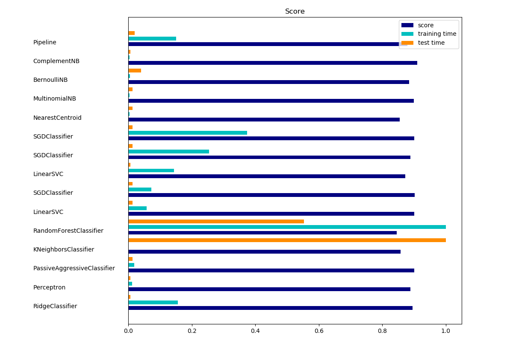

Note
Click here to download the full example code
基于稀疏特征的文本文档分类¶
这是一个例子，展示了如何在scikit-learn中使用词袋方法按主题对文档进行分类。 此示例使用一个 scipy.sparse 矩阵来存储这些特征，并演示了能够有效处理稀疏矩阵的各种分类器。
此示例中使用的数据集是20个新闻组数据集。它将被自动下载，然后缓存。
条形图表示每个分类器的准确率、归一化训练时间 和 归一化测试时间。
翻译者：http://www.studyai.com/antares
Out:
Usage: plot_document_classification_20newsgroups.py [options]
Options:
-h, --help show this help message and exit
--report Print a detailed classification report.
--chi2_select=SELECT_CHI2
Select some number of features using a chi-squared
test
--confusion_matrix Print the confusion matrix.
--top10 Print ten most discriminative terms per class for
every classifier.
--all_categories Whether to use all categories or not.
--use_hashing Use a hashing vectorizer.
--n_features=N_FEATURES
n_features when using the hashing vectorizer.
--filtered Remove newsgroup information that is easily overfit:
headers, signatures, and quoting.
Loading 20 newsgroups dataset for categories:
['alt.atheism', 'talk.religion.misc', 'comp.graphics', 'sci.space']
data loaded
2034 documents - 3.980MB (training set)
1353 documents - 2.867MB (test set)
4 categories
Extracting features from the training data using a sparse vectorizer
done in 0.521030s at 7.638MB/s
n_samples: 2034, n_features: 33809
Extracting features from the test data using the same vectorizer
done in 0.322019s at 8.905MB/s
n_samples: 1353, n_features: 33809
================================================================================
Ridge Classifier
________________________________________________________________________________
Training:
RidgeClassifier(alpha=1.0, class_weight=None, copy_X=True, fit_intercept=True,
max_iter=None, normalize=False, random_state=None, solver='sag',
tol=0.01)
train time: 0.204s
test time: 0.001s
accuracy: 0.897
dimensionality: 33809
density: 1.000000
================================================================================
Perceptron
________________________________________________________________________________
Training:
Perceptron(alpha=0.0001, class_weight=None, early_stopping=False, eta0=1.0,
fit_intercept=True, max_iter=50, n_iter=None, n_iter_no_change=5,
n_jobs=None, penalty=None, random_state=0, shuffle=True, tol=0.001,
validation_fraction=0.1, verbose=0, warm_start=False)
train time: 0.014s
test time: 0.002s
accuracy: 0.888
dimensionality: 33809
density: 0.240114
================================================================================
Passive-Aggressive
________________________________________________________________________________
Training:
PassiveAggressiveClassifier(C=1.0, average=False, class_weight=None,
early_stopping=False, fit_intercept=True, loss='hinge',
max_iter=50, n_iter=None, n_iter_no_change=5, n_jobs=None,
random_state=None, shuffle=True, tol=0.001,
validation_fraction=0.1, verbose=0, warm_start=False)
train time: 0.028s
test time: 0.001s
accuracy: 0.900
dimensionality: 33809
density: 0.705552
================================================================================
kNN
________________________________________________________________________________
Training:
KNeighborsClassifier(algorithm='auto', leaf_size=30, metric='minkowski',
metric_params=None, n_jobs=None, n_neighbors=10, p=2,
weights='uniform')
train time: 0.001s
test time: 0.146s
accuracy: 0.858
================================================================================
Random forest
________________________________________________________________________________
Training:
RandomForestClassifier(bootstrap=True, class_weight=None, criterion='gini',
max_depth=None, max_features='auto', max_leaf_nodes=None,
min_impurity_decrease=0.0, min_impurity_split=None,
min_samples_leaf=1, min_samples_split=2,
min_weight_fraction_leaf=0.0, n_estimators=100, n_jobs=None,
oob_score=False, random_state=None, verbose=0,
warm_start=False)
train time: 1.380s
test time: 0.087s
accuracy: 0.841
================================================================================
L2 penalty
________________________________________________________________________________
Training:
LinearSVC(C=1.0, class_weight=None, dual=False, fit_intercept=True,
intercept_scaling=1, loss='squared_hinge', max_iter=1000,
multi_class='ovr', penalty='l2', random_state=None, tol=0.001,
verbose=0)
train time: 0.094s
test time: 0.002s
accuracy: 0.900
dimensionality: 33809
density: 1.000000
________________________________________________________________________________
Training:
SGDClassifier(alpha=0.0001, average=False, class_weight=None,
early_stopping=False, epsilon=0.1, eta0=0.0, fit_intercept=True,
l1_ratio=0.15, learning_rate='optimal', loss='hinge', max_iter=50,
n_iter=None, n_iter_no_change=5, n_jobs=None, penalty='l2',
power_t=0.5, random_state=None, shuffle=True, tol=None,
validation_fraction=0.1, verbose=0, warm_start=False)
train time: 0.116s
test time: 0.002s
accuracy: 0.902
dimensionality: 33809
density: 0.668417
================================================================================
L1 penalty
________________________________________________________________________________
Training:
LinearSVC(C=1.0, class_weight=None, dual=False, fit_intercept=True,
intercept_scaling=1, loss='squared_hinge', max_iter=1000,
multi_class='ovr', penalty='l1', random_state=None, tol=0.001,
verbose=0)
train time: 0.217s
test time: 0.001s
accuracy: 0.874
dimensionality: 33809
density: 0.005575
________________________________________________________________________________
Training:
SGDClassifier(alpha=0.0001, average=False, class_weight=None,
early_stopping=False, epsilon=0.1, eta0=0.0, fit_intercept=True,
l1_ratio=0.15, learning_rate='optimal', loss='hinge', max_iter=50,
n_iter=None, n_iter_no_change=5, n_jobs=None, penalty='l1',
power_t=0.5, random_state=None, shuffle=True, tol=None,
validation_fraction=0.1, verbose=0, warm_start=False)
train time: 0.397s
test time: 0.003s
accuracy: 0.888
dimensionality: 33809
density: 0.019928
================================================================================
Elastic-Net penalty
________________________________________________________________________________
Training:
SGDClassifier(alpha=0.0001, average=False, class_weight=None,
early_stopping=False, epsilon=0.1, eta0=0.0, fit_intercept=True,
l1_ratio=0.15, learning_rate='optimal', loss='hinge', max_iter=50,
n_iter=None, n_iter_no_change=5, n_jobs=None, penalty='elasticnet',
power_t=0.5, random_state=None, shuffle=True, tol=None,
validation_fraction=0.1, verbose=0, warm_start=False)
train time: 0.560s
test time: 0.003s
accuracy: 0.900
dimensionality: 33809
density: 0.186748
================================================================================
NearestCentroid (aka Rocchio classifier)
________________________________________________________________________________
Training:
NearestCentroid(metric='euclidean', shrink_threshold=None)
train time: 0.009s
test time: 0.002s
accuracy: 0.855
================================================================================
Naive Bayes
________________________________________________________________________________
Training:
MultinomialNB(alpha=0.01, class_prior=None, fit_prior=True)
train time: 0.006s
test time: 0.002s
accuracy: 0.899
dimensionality: 33809
density: 1.000000
________________________________________________________________________________
Training:
BernoulliNB(alpha=0.01, binarize=0.0, class_prior=None, fit_prior=True)
train time: 0.007s
test time: 0.007s
accuracy: 0.884
dimensionality: 33809
density: 1.000000
________________________________________________________________________________
Training:
ComplementNB(alpha=0.1, class_prior=None, fit_prior=True, norm=False)
train time: 0.006s
test time: 0.001s
accuracy: 0.911
dimensionality: 33809
density: 1.000000
================================================================================
LinearSVC with L1-based feature selection
________________________________________________________________________________
Training:
Pipeline(memory=None,
steps=[('feature_selection', SelectFromModel(estimator=LinearSVC(C=1.0, class_weight=None, dual=False, fit_intercept=True,
intercept_scaling=1, loss='squared_hinge', max_iter=1000,
multi_class='ovr', penalty='l1', random_state=None, tol=0.001,
verbose=0),
max_features=None, no...ax_iter=1000,
multi_class='ovr', penalty='l2', random_state=None, tol=0.0001,
verbose=0))])
train time: 0.245s
test time: 0.003s
accuracy: 0.880
# Author: Peter Prettenhofer <peter.prettenhofer@gmail.com>
# Olivier Grisel <olivier.grisel@ensta.org>
# Mathieu Blondel <mathieu@mblondel.org>
# Lars Buitinck
# License: BSD 3 clause
from __future__ import print_function
import logging
import numpy as np
from optparse import OptionParser
import sys
from time import time
import matplotlib.pyplot as plt
from sklearn.datasets import fetch_20newsgroups
from sklearn.feature_extraction.text import TfidfVectorizer
from sklearn.feature_extraction.text import HashingVectorizer
from sklearn.feature_selection import SelectFromModel
from sklearn.feature_selection import SelectKBest, chi2
from sklearn.linear_model import RidgeClassifier
from sklearn.pipeline import Pipeline
from sklearn.svm import LinearSVC
from sklearn.linear_model import SGDClassifier
from sklearn.linear_model import Perceptron
from sklearn.linear_model import PassiveAggressiveClassifier
from sklearn.naive_bayes import BernoulliNB, ComplementNB, MultinomialNB
from sklearn.neighbors import KNeighborsClassifier
from sklearn.neighbors import NearestCentroid
from sklearn.ensemble import RandomForestClassifier
from sklearn.utils.extmath import density
from sklearn import metrics
# Display progress logs on stdout
logging.basicConfig(level=logging.INFO,
format='%(asctime)s %(levelname)s %(message)s')
# parse commandline arguments
op = OptionParser()
op.add_option("--report",
action="store_true", dest="print_report",
help="Print a detailed classification report.")
op.add_option("--chi2_select",
action="store", type="int", dest="select_chi2",
help="Select some number of features using a chi-squared test")
op.add_option("--confusion_matrix",
action="store_true", dest="print_cm",
help="Print the confusion matrix.")
op.add_option("--top10",
action="store_true", dest="print_top10",
help="Print ten most discriminative terms per class"
" for every classifier.")
op.add_option("--all_categories",
action="store_true", dest="all_categories",
help="Whether to use all categories or not.")
op.add_option("--use_hashing",
action="store_true",
help="Use a hashing vectorizer.")
op.add_option("--n_features",
action="store", type=int, default=2 ** 16,
help="n_features when using the hashing vectorizer.")
op.add_option("--filtered",
action="store_true",
help="Remove newsgroup information that is easily overfit: "
"headers, signatures, and quoting.")
def is_interactive():
return not hasattr(sys.modules['__main__'], '__file__')
# work-around for Jupyter notebook and IPython console
argv = [] if is_interactive() else sys.argv[1:]
(opts, args) = op.parse_args(argv)
if len(args) > 0:
op.error("this script takes no arguments.")
sys.exit(1)
print(__doc__)
op.print_help()
print()
# #############################################################################
# Load some categories from the training set
if opts.all_categories:
categories = None
else:
categories = [
'alt.atheism',
'talk.religion.misc',
'comp.graphics',
'sci.space',
]
if opts.filtered:
remove = ('headers', 'footers', 'quotes')
else:
remove = ()
print("Loading 20 newsgroups dataset for categories:")
print(categories if categories else "all")
data_train = fetch_20newsgroups(subset='train', categories=categories,
shuffle=True, random_state=42,
remove=remove)
data_test = fetch_20newsgroups(subset='test', categories=categories,
shuffle=True, random_state=42,
remove=remove)
print('data loaded')
# order of labels in `target_names` can be different from `categories`
target_names = data_train.target_names
def size_mb(docs):
return sum(len(s.encode('utf-8')) for s in docs) / 1e6
data_train_size_mb = size_mb(data_train.data)
data_test_size_mb = size_mb(data_test.data)
print("%d documents - %0.3fMB (training set)" % (
len(data_train.data), data_train_size_mb))
print("%d documents - %0.3fMB (test set)" % (
len(data_test.data), data_test_size_mb))
print("%d categories" % len(target_names))
print()
# split a training set and a test set
y_train, y_test = data_train.target, data_test.target
print("Extracting features from the training data using a sparse vectorizer")
t0 = time()
if opts.use_hashing:
vectorizer = HashingVectorizer(stop_words='english', alternate_sign=False,
n_features=opts.n_features)
X_train = vectorizer.transform(data_train.data)
else:
vectorizer = TfidfVectorizer(sublinear_tf=True, max_df=0.5,
stop_words='english')
X_train = vectorizer.fit_transform(data_train.data)
duration = time() - t0
print("done in %fs at %0.3fMB/s" % (duration, data_train_size_mb / duration))
print("n_samples: %d, n_features: %d" % X_train.shape)
print()
print("Extracting features from the test data using the same vectorizer")
t0 = time()
X_test = vectorizer.transform(data_test.data)
duration = time() - t0
print("done in %fs at %0.3fMB/s" % (duration, data_test_size_mb / duration))
print("n_samples: %d, n_features: %d" % X_test.shape)
print()
# mapping from integer feature name to original token string
if opts.use_hashing:
feature_names = None
else:
feature_names = vectorizer.get_feature_names()
if opts.select_chi2:
print("Extracting %d best features by a chi-squared test" %
opts.select_chi2)
t0 = time()
ch2 = SelectKBest(chi2, k=opts.select_chi2)
X_train = ch2.fit_transform(X_train, y_train)
X_test = ch2.transform(X_test)
if feature_names:
# keep selected feature names
feature_names = [feature_names[i] for i
in ch2.get_support(indices=True)]
print("done in %fs" % (time() - t0))
print()
if feature_names:
feature_names = np.asarray(feature_names)
def trim(s):
"""Trim string to fit on terminal (assuming 80-column display)"""
return s if len(s) <= 80 else s[:77] + "..."
# #############################################################################
# Benchmark classifiers
def benchmark(clf):
print('_' * 80)
print("Training: ")
print(clf)
t0 = time()
clf.fit(X_train, y_train)
train_time = time() - t0
print("train time: %0.3fs" % train_time)
t0 = time()
pred = clf.predict(X_test)
test_time = time() - t0
print("test time: %0.3fs" % test_time)
score = metrics.accuracy_score(y_test, pred)
print("accuracy: %0.3f" % score)
if hasattr(clf, 'coef_'):
print("dimensionality: %d" % clf.coef_.shape[1])
print("density: %f" % density(clf.coef_))
if opts.print_top10 and feature_names is not None:
print("top 10 keywords per class:")
for i, label in enumerate(target_names):
top10 = np.argsort(clf.coef_[i])[-10:]
print(trim("%s: %s" % (label, " ".join(feature_names[top10]))))
print()
if opts.print_report:
print("classification report:")
print(metrics.classification_report(y_test, pred,
target_names=target_names))
if opts.print_cm:
print("confusion matrix:")
print(metrics.confusion_matrix(y_test, pred))
print()
clf_descr = str(clf).split('(')[0]
return clf_descr, score, train_time, test_time
results = []
for clf, name in (
(RidgeClassifier(tol=1e-2, solver="sag"), "Ridge Classifier"),
(Perceptron(max_iter=50, tol=1e-3), "Perceptron"),
(PassiveAggressiveClassifier(max_iter=50, tol=1e-3),
"Passive-Aggressive"),
(KNeighborsClassifier(n_neighbors=10), "kNN"),
(RandomForestClassifier(n_estimators=100), "Random forest")):
print('=' * 80)
print(name)
results.append(benchmark(clf))
for penalty in ["l2", "l1"]:
print('=' * 80)
print("%s penalty" % penalty.upper())
# Train Liblinear model
results.append(benchmark(LinearSVC(penalty=penalty, dual=False,
tol=1e-3)))
# Train SGD model
results.append(benchmark(SGDClassifier(alpha=.0001, max_iter=50,
penalty=penalty)))
# Train SGD with Elastic Net penalty
print('=' * 80)
print("Elastic-Net penalty")
results.append(benchmark(SGDClassifier(alpha=.0001, max_iter=50,
penalty="elasticnet")))
# Train NearestCentroid without threshold
print('=' * 80)
print("NearestCentroid (aka Rocchio classifier)")
results.append(benchmark(NearestCentroid()))
# Train sparse Naive Bayes classifiers
print('=' * 80)
print("Naive Bayes")
results.append(benchmark(MultinomialNB(alpha=.01)))
results.append(benchmark(BernoulliNB(alpha=.01)))
results.append(benchmark(ComplementNB(alpha=.1)))
print('=' * 80)
print("LinearSVC with L1-based feature selection")
# The smaller C, the stronger the regularization.
# The more regularization, the more sparsity.
results.append(benchmark(Pipeline([
('feature_selection', SelectFromModel(LinearSVC(penalty="l1", dual=False,
tol=1e-3))),
('classification', LinearSVC(penalty="l2"))])))
# make some plots
indices = np.arange(len(results))
results = [[x[i] for x in results] for i in range(4)]
clf_names, score, training_time, test_time = results
training_time = np.array(training_time) / np.max(training_time)
test_time = np.array(test_time) / np.max(test_time)
plt.figure(figsize=(12, 8))
plt.title("Score")
plt.barh(indices, score, .2, label="score", color='navy')
plt.barh(indices + .3, training_time, .2, label="training time",
color='c')
plt.barh(indices + .6, test_time, .2, label="test time", color='darkorange')
plt.yticks(())
plt.legend(loc='best')
plt.subplots_adjust(left=.25)
plt.subplots_adjust(top=.95)
plt.subplots_adjust(bottom=.05)
for i, c in zip(indices, clf_names):
plt.text(-.3, i, c)
plt.show()
Total running time of the script: ( 0 minutes 4.955 seconds)